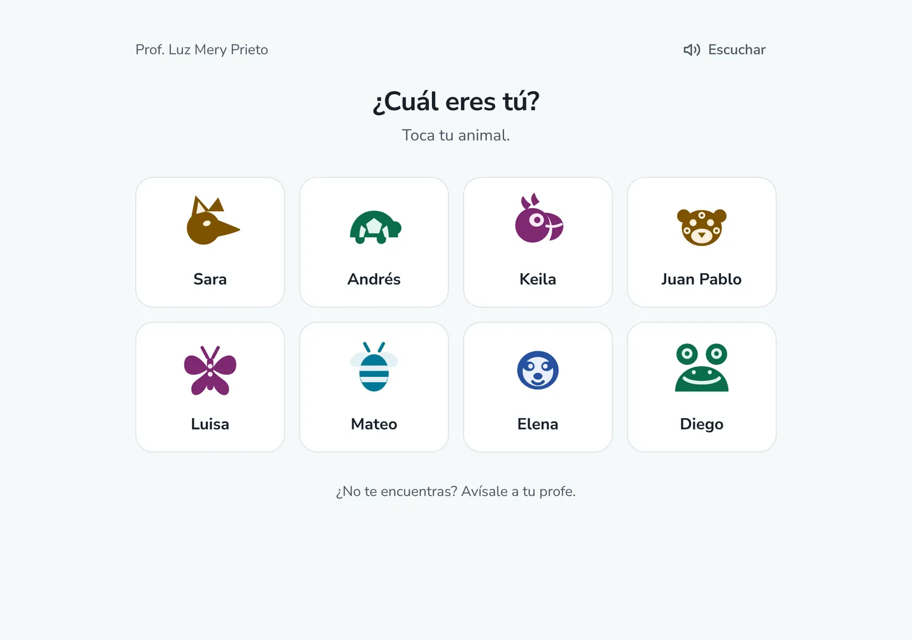

Estudiantes
Entran sin correo y sin contraseña
Escriben el código de su curso, tocan su animal y sus tres imágenes secretas. Está pensado para que un niño de 8 años entre solo, en el computador de la sala o en una tableta.
- Botón para escuchar cada pantalla en voz alta
- Letra más grande con un toque
- Sin fotos: cada niño es un animal ilustrado
